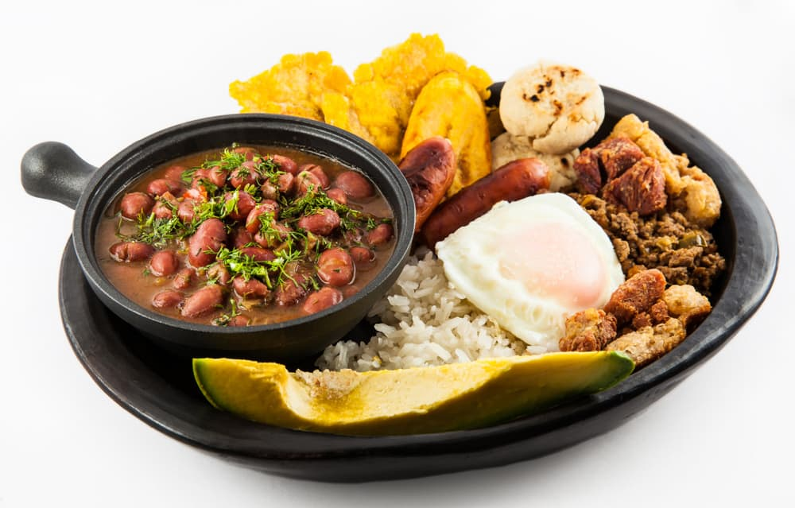

Bandeja Paisa

Bandeja Paisa is regarded as the national dish of Colombia.
Back in the day, in the Andean state of Antioquia, peasant field workers would start their day with Bandeja Paisa. It was a means of providing them a full day's worth of energy and nourishment to keep them working throughout the day.
This hearty dish includes red beans, white rice, chicharrón, carne en polvo, chorizo, fried egg, ripe plantain, avocado and arepa. When you ask a Colombian what dish to try first in Colombia, Bandeja Paisa is invariably the answer!
Ingredients
chicharrónes
- 1 pound skinless pork belly
- 2 teaspoons kosher salt
- 2 teaspoons granulated sugar
- ½ teaspoon ground cumin
Hogao
- ¼ cup canola oil
- 2 medium-size yellow onions, chopped (about 4 cups)
- 1 large green bell pepper, chopped (about 1 1/2 cups)
- 1 tablespoon achiote paste
- 4 plum tomatoes, chopped (about 5 cups)
- 5 garlic cloves, chopped
- 2 teaspoons ground cumin
- 1 ¾ teaspoons kosher salt
- ¼ cup chopped fresh cilantro
Frijoles Rojos
- ¾ pound dried large red beans (about 1 3/4 cups)
- 1 tablespoon canola oil
- ¼ pound skinless pork belly, cut into 1-in. pieces
- 8 cups lower-sodium chicken broth
- 2 cups Hogao
- 1 teaspoon ground cumin
- ¾ teaspoon kosher salt
Carne Molida
- 1 tablespoon canola oil
- 1 pound ground chuck
- 1 cup Hogao
- 1 teaspoon kosher salt
- ½ teaspoon ground cumin
Chorizo
- 1 tablespoon canola oil
- 4 (2 1/2-oz.) fresh chorizo links
Arepas
- 1 cup (about 5 oz.) white masarepa (pre-cooked corn flour)
- 4 ounces asadero cheese or queso blanco, shredded (about 1 cup)
- 1 cup warm water
- ¾ teaspoon kosher salt
- 3 tablespoons canola oil, divided
Tajadas de Platano
- 2 large ripe plantains, peeled
- ¼ cup canola oil
- ¼ teaspoon kosher salt
Huevos Fritos
- 2 tablespoons canola oil
- 4 large eggs
- ¼ teaspoon kosher salt
- ⅛ teaspoon black pepper
Additional Ingredients
- 3 cups cooked white rice
- 2 avocados, halved
- Fresh cilantro leaves
- 2 limes (cut into halves for garnish)
Steps
- Prepare the Chicharrones: Place pork belly on a rimmed baking sheet. Stir together salt, sugar and cumin; rub evenly on pork. Wrap pork in plastic wrap, and chill 6 to 12 hours.
- Preheat oven to 425°F. Unwrap pork, and place, fat side up, on a lightly greased wire rack. Place rack in a rimmed baking sheet, and bake until golden brown and crispy, about 30 minutes.
- Reduce oven temperature to 250°F, and cook until pork is tender when pierced with a fork, about 1 hour and 15 minutes.
- Cool to room temperature, about 45 minutes. Wrap pork in plastic wrap, and chill until firm, at least 1 hour.
- Cut pork into 4 strips. Cut 3/4-inch deep slits crosswise in pork at 1-inch intervals. Heat a large skillet over medium. Cook pork until golden brown and crispy, about 4 minutes per side.
- Prepare the Hogao: Heat oil in a large skillet over medium. Add onions, bell pepper, and achiote paste; cook, stirring occasionally, until tender, about 8 minutes. Stir in tomatoes, garlic, cumin, and salt. Cook, stirring often, until tomatoes have broken down and thickened, about 15 minutes. Remove from heat, and stir in cilantro.
- Prepare the Frijoles Rojos: Place beans in a medium bowl; add water to cover by at least 2 inches. Cover and let stand overnight at room temperature.
- Drain beans. Heat oil in a Dutch oven over medium-low. Add pork belly; cook, stirring occasionally, until browned, about 8 minutes. Stir in beans, broth, Hogao, cumin, and salt. Increase heat to medium-high, and bring to a boil. Reduce heat to medium-low, and simmer, stirring occasionally, until beans are tender, 4 hours and 30 minutes to 5 hours, adding water, 1 cup at a time, if mixture becomes too thick.
- Prepare the Carne Molida: Heat oil in a large skillet over medium-high. Add beef; cook, stirring to break into pieces, until browned, 6 to 8 minutes. Stir in Hogao, salt, and cumin; cook, stirring often, until well combined and heated through, about 2 minutes.
- Prepare the Chorizo: Heat oil in a large cast-iron skillet over medium. Cook chorizo links, turning occasionally, until lightly charred and cooked through, about 15 minutes.
- Prepare the Arepas: Combine masarepa, cheese, water, salt, and 1 tablespoon of the oil in a medium bowl. Stir with a wooden spoon until dough is smooth. (Dough will look soupy, but will firm up after standing.) Cover and let stand 10 minutes.
- Shape dough into 4 (4-ounce) balls. Gently flatten each into a 1/2-inch-thick disk (about 3 1/2 inches in diameter). Heat remaining 2 tablespoons oil in a large cast-iron skillet over medium. Cook arepas until golden brown and charred in spots, about 5 minutes per side.
- Prepare the Tajadas de Plátano: Cut plantains diagonally into 1/2-inch-thick slices. Heat oil in a large nonstick skillet over medium. Cook plantains, in batches, until golden brown, 1 to 2 minutes per side. Transfer to a plate lined with paper towels, and sprinkle with salt.
- Prepare the Huevos Fritos: Heat oil in a large nonstick skillet over medium. Break eggs into pan, and sprinkle with salt and pepper. Cook until whites are set and starting to brown around edges, 4 to 5 minutes.
- Evenly divide Chicharrones, Frijoles Rojos, Carne Molida, Chorizo, Arepas, Tajadas de Plátano, Huevos Fritos, rice, avocados, and remaining Hogao among 4 platters. Garnish with cilantro, and serve immediately.